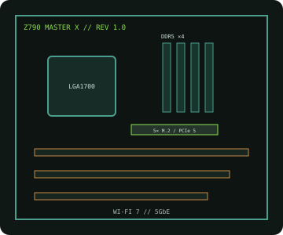

[ INDIVIDUAL COMPONENT // MOTHERBOARDS ]
GIGABYTE Z790 AORUS MASTER X (rev. 1.0)
LGA1700 ATX enthusiast board with DDR5, PCIe 5.0, 5GbE and Wi-Fi 7; MASTER X is the exact refresh SKU, not the earlier Z790 AORUS MASTER.

IDENTIFICATION: Exact model/revision is Z790 AORUS MASTER X rev. 1.0. Do not substitute firmware/support pages for the similarly named original MASTER.
Specifications
| Exact board / revision | GIGABYTE Z790 AORUS MASTER X, rev. 1.0 |
|---|---|
| Socket / chipset / CPU | LGA1700, Intel Z790 Express; 12th/13th/14th Gen Intel Core desktop processors as enumerated by revision-specific CPU support and BIOS. |
| Form factor | E-ATX, 305 × 269 mm. |
| Memory | Four dual-channel DDR5 DIMM slots, up to 256 GB listed capacity; XMP and high data rates require CPU/BIOS/QVL validation. |
| PCI Express | One CPU-connected PCIe 5.0 x16 slot, one PCIe 4.0 x16-length slot operating at x4, and one PCIe 3.0 x16-length slot operating at x1; see manual for lane-sharing behavior. |
| Storage | Five M.2 sockets, including PCIe 5.0 support on the CPU-connected M.2 position, plus four SATA 6 Gb/s ports. Check the manual for shared lanes. |
| Networking / I/O | 10GbE LAN, Wi-Fi 7/BT and USB 3.2 including USB-C; rear I/O and internal headers depend on the exact board manual. |
| BIOS / compatibility | 12th Gen support is baseline; newer CPU stepping/generations may require a later BIOS. Use the MASTER X rev. 1.0 CPU list and memory QVL. |
Compatibility and service notes
MASTER X is a distinct model from Z790 AORUS MASTER. Confirm printed product name and rev. 1.0 before selecting firmware. LGA1700 generation support is BIOS-specific; DDR5 modules and validated capacity/rates must match the memory QVL. Review lane sharing and M.2/SATA population rules.
Record BIOS and board revision before updating. Use only this model's firmware and standard ESD-safe service procedures.
Manufacturer sources
- GIGABYTE — Z790 AORUS MASTER X rev. 1.0 specificationsOfficial model specifications and manual.
- GIGABYTE — MASTER X rev. 1.0 CPU support and BIOSCheck processor list, firmware notes and memory QVL.